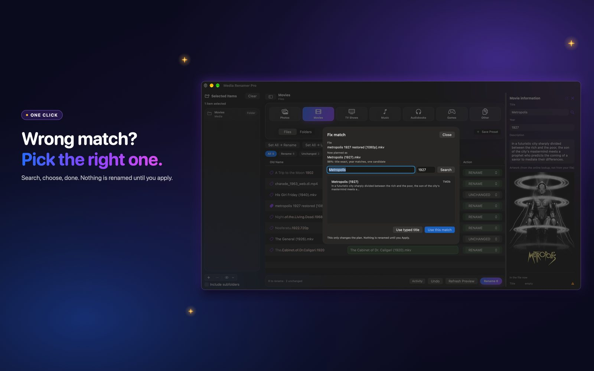

How to fix a wrong match: pick the right movie, show, song or book
The app looked it up and chose the wrong one. Now you can choose the right one, and it remembers.
 By Buck Kettering· October 30, 2026· Applies to version 2.0
By Buck Kettering· October 30, 2026· Applies to version 2.0
Why a match goes wrong
A file called Rocky 3.mkv could be several different films. A song called Home could be a hundred songs. The app uses the name, the year and the tags to choose, and when the evidence is thin it can choose wrong. That is why every row shows how sure it is. See what the confidence percentage means.
Open Fix match
Click the tag icon on a row, left of the old name. The information panel opens down the right side. Choose Fix match. The same button is in the Edit tags panel.
Fix match works for Movies, TV shows, Music and Audiobooks. Games are not included.

Search and choose
- Movies and TV: search by title and year. Candidates come from TMDb and TVmaze, and each one shows which source it is from.
- Music: there is an artist box too. Candidates come from MusicBrainz.
- Audiobooks: there is an author box. Candidates come from Google Books, with Open Library as the fallback.
Press Use this match to take a result. If none of them is right, Use typed title keeps what you typed.
The sheet says it plainly: this only changes the plan, and nothing is renamed until you apply.
It remembers
Your pick is saved, so the next preview of that file uses it again and you do not have to fix it twice. To clear them all, open Settings, then the Tags area. It shows how many picks are remembered, with a Forget All button.
Music and audiobook details
For a song or a book, the name comes from the pick itself, so what you chose is what you get. Audiobook folders accept picks too. Music folders do not, because a folder holds many songs.
When you are happy with the match, you can also fill the tags from it.